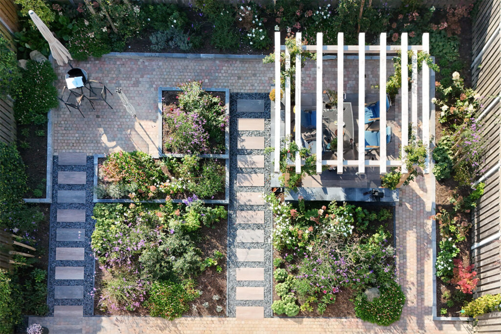

1
Tuinontwerp
Je droomtuin begint met een sterk ontwerp. Na een kennismaking en een rondgang door de ruimte maken we een schetsontwerp dat past bij je stijl, van modern en strak tot landelijk en groen.
- Beplantingsplan
Planten voor sfeer en onderhoudsgemak - Bestrating en indeling
Paden, terrassen en zitplekken - Sfeer en stijl
Passend bij huis en omgeving - Duurzaamheid
Waterafvoer en weinig onderhoud